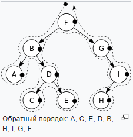

Структуры данных
Что это
Структура данных - это контейнер, информация в котором скомпонована характерным образом. Для каждой задачи - необходима своя.
Основные разделы
Массивы
Массивы - это простейшая и наиболее распространенная структура данных. Стеки и очереди, производны от массивов.
Есть два типа:
- Одномерные.
- Многомерные - содержат другие массивы.
Операции с массивами:
- Insert — вставляем элемент на позицию с заданным индексом.
- Get — возвращаем элемент, занимающий позицию с заданным индексом.
- Delete — удаляем элемент с заданным индексом.
- Size — Получаем общее количество элементов в массиве.
Стеки
Стеки - линейная структура где все храниться в виде последовательной стопки (LIFO). Пример: Ctrl+Z или Stack память JAVA.
Операции со стеками:
- Push — Вставляет элемент в стек сверху.
- Pop — Возвращает верхний элемент после того, как удалит его из стека.
- isEmpty — Возвращает true, если стек пуст.
- Top — Возвращает верхний элемент, не удаляя его из стека.
Очереди
Очереди - линейная структура как стек, но по принципу FIFO.
Операции с очередями:
- Enqueue() — Добавляет элемент в конец очереди.
- Dequeue() — Удаляет элемент из начала очереди.
- isEmpty() — Возвращает true, если очередь пуста.
- Top() — Возвращает первый элемент в очереди.
Связные списки
Связные списки - линейная структура данных, похожа на массив. Отличается от массива по выделению памяти, внутренней структуре и процессу выполнения операции вставки и удаления. Состоит из цепочки узлов(Данные и ссылка на следующий элемент). Есть головной указатель, соответствующий первому элементу в связном списке, и, если список пуст, то он направлен просто на null.
Есть два типа:
- Односвязный список (однонаправленный).
- Двусвязный список (двунаправленный).
Операции с массивами:
- InsertAtEnd — Вставляет заданный элемент в конце связного списка.
- InsertAtHead — Вставляет заданный элемент в начале (с головы) связного списка.
- Delete — Удаляет заданный элемент из связного списка.
- DeleteAtHead — Удаляет первый элемент в связном списке.
- Search — Возвращает заданный элемент из связного списка.
- isEmpty — Возвращает true, если связный список пуст.
Графы
Графы - это множество узлов, соединенных друг с другом в виде сети. Узлы также называются вершинами. Пара (x,y) называется ребром, это означает, что вершина x соединена с вершиной y. Ребро может иметь вес/стоимость — показатель, характеризующий, насколько затратен переход от вершины x к вершине y.

Типы графов:
- Неориентированный граф.
- Ориентированный граф.
В языке программирования графы могут быть двух видов:
- Матрица смежности.
- Список смежности.
Распространенные алгоритмы обхода графа:
- Поиск в ширину.
- Поиск в глубину.
Деревья
Деревья - это иерархическая структура данных, состоящая из вершин (узлов) и ребер, которые их соединяют. Деревья подобны графам, однако, ключевое отличие дерева от графа таково: в дереве не бывает циклов.
Типы деревьев:
- N-арное дерево.
- Сбалансированное дерево.
- Двоичное дерево.
- Двоичное дерево поиска.
- АВЛ-дерево.
- Красно-черное дерево.
- 2—3 дерево.
Способы обхода деревьев:
- В глубину.
- Прямой обход(Pre-order)(NLR) - использовать когда вы знаете что нужно проверить руты перед тем как проверять их листья.
- Центрированный обход(In-order)(LNR) - используется как когда нужно проверять в начале детей и только потом подыматься к родительским узлам.
- Обратный обход(Post-order)(LRN) - когда нужно начать-так сказать с листов и завершить главным узлом — то есть разложить дерево на то, как оно строилось. 
- В ширину - посещаем каждый узел на уровне прежде чем перейти на следующий уровень.

Боры(префиксное дерево)
Боры(префиксное дерево) - это древовидная структура данных, которая особенно эффективна при решении задач на строки. Она обеспечивает быстрое извлечение данных и чаще всего применяется для поиска слов в словаре, автозавершений в поисковике и даже для IP-маршрутизации. Вот как три слова «top» (верх), «thus» (следовательно), and «their» (их) хранятся в бору:

Хеш-таблицы
Хеш-таблицы - хеширование — это процесс, применяемый для уникальной идентификации объектов и сохранения каждого объекта по заранее вычисленному индексу, именуемому его «ключом». Таким образом, объект хранится в виде «ключ-значение», а коллекция таких объектов называется «словарь». Каждый объект можно искать по его ключу. Существуют разные структуры данных, построенные по принципу хеширования, но чаще всего из таких структур применяется хеш-таблица.